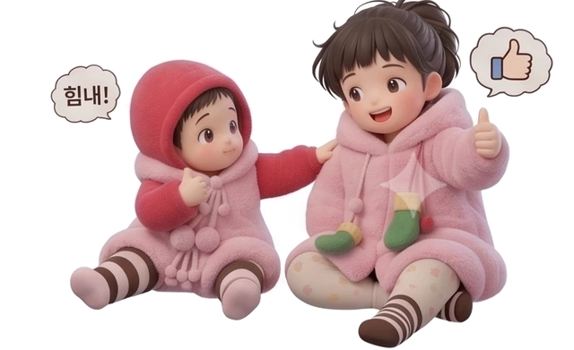

하루 한 과씩
영어는 기차다.
영어는 기차다.
순서만 지키면 끝나.
복잡한 문법 용어는 다 뺐어. 아는 단어로 순서만 지키면 돼. 하루 한 과씩, 우리 같이 하루 한 과씩만 가보자.

소개 영상 · 24초
기차, 드라마, 그림 한 줄
영어는 순서만 지키면 돼. 단어 하나는 드라마 한 장면으로, 규칙은 그림 한 줄로 익혀. 누르면 소리와 함께 바로 나와.
나의 진도
00/ 56과